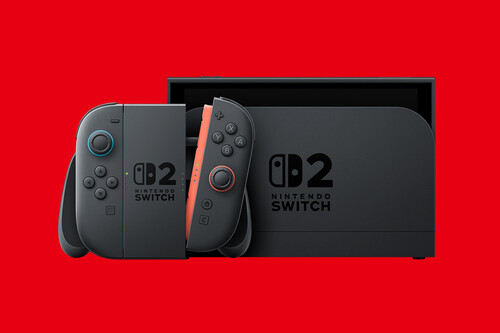

¡Ya está aquí el siguiente paso en la evolución de Nintendo Switch!
Juega en una pantalla más grande, de 1080p, o conecta la consola al televisor para jugar en una resolución de hasta 4K*. Gracias a la compatibilidad con el alto rango dinámico (HDR) y una frecuencia de imágenes de hasta 120 fps, disfrutarás de colores nítidos e intensos, así como de partidas fluidas.
Acopla los nuevos mandos Joy-Con 2 a la consola con los conectores magnéticos. Incluso puedes usar ambos mandos a modo de ratón en juegos compatibles.
Pásalo en grande con juegos nuevos y exclusivos para Nintendo Switch 2, como Mario Kart World. Además, ¡podrás seguir jugando a los títulos de Nintendo Switch que ya tengas**!